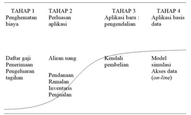
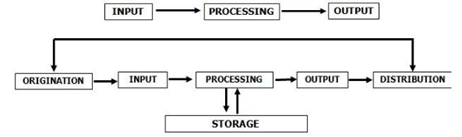

DUNIA USAHA
A. Manfaat Komputer Dalam Bisnis
Dalam dunia bisnis, komputer biasanya digunakan untuk proses administrasi keuangan, statistik
kemajuan, data stok barang, prediksi untuk penjualan, bahkan hingga untuk merencanakan bisnis masa
depan, dsb. Dalam hal tersebut diperlukannya data-data perusahaan yang valid dan diinput kedalam
software komputer, dikelola dalam software, sehingga menghasilkan laporan yang diinginkan oleh
owner/manager sebuah usaha untuk mengambil sebuah kebijakan untuk suatu usaha atau mengetahui
perkembangan suatu usaha.
B. Evolusi Pengolahan Data
Diperlukan evolusi dalam pengolahan data agar tidak terjadi kecurangan dalam hal manipulasi data.
Berikut adalah Tahap dalam Evolusi Pengolahan Data sesuai dengan Kurva S.

-
TAHAP 1 merupakan tujuan utama tugas manusia digantikan oleh komputer adalah penghematan biaya
dari berbagai sektor.
-
TAHAP 2 yaitu perluasan aplikasi bertujuan mengalihkan SDM ke service, quality control,
operasional, analisa pengembangan system, dll (pekerjaan yang tidak bisa digantikan dengan
komputer).
-
TAHAP 3 merupakan pengendalian dalam pembelian dan penjualan.
-
TAHAP 4 yaitu menganalisa data-data yang sudah di input, untuk memprediksi penjualan kedepannya.
Dampak yang terjadi adanya evolusi pengolahan data adalah bisa digantikannya peranan manusia, dimana
semua proses input di lakukan oleh media komputer. Contoh profesi yang tergantikan oleh teknologi :
-
Agen Penjualan, pada dasarnya agen penjualan sangatlah penting untuk mempromosikan suatu barang
atau jasa, tetapi dalam era sekarang agen penjualan tergantikan dengan adanya e-commerce.
-
Kasir, di negara-negara maju kasir mulai tergantikan dengan teknologi, pelanggan dapat langsung
menscan barcode yang tertera dalam produk yang terhubung dengan alat pembayaran digital.
-
Teller, peranan teller sedikit tergantikan dengan mesin ATM (Anjungan Tunai Mandiri) dalam
melakukan beberapa jenis transaksi, seperti transfer, setor tunai, melakukan validasi, dll.
-
Operator Telepon, pekerjaan operator telepon sedikit digantikan dengan mesin penjawab otamatis
dalam menjawab beberapa pertanyaan dengan memberikan panduan tentang hal-hal yang sering
ditanyakan pelanggan atau customer.
-
Tukang pos, surat berbentuk fisik mulai digantikan dengan e-mail (electronic mail).
-
Administrasi, profesi di bidang administrasi paling banyak perubahan yang signifikan dengan
adanya perkembangan teknologi, dari mulai pendaftaran, proses validasi, pencatatan, pembukuan,
pelaporan, penyimpanan dan segala bentuk informasi dapat diproses komputer.
Profesi baru dalam dunia digital dan evolusi pengelolahan data yaitu programmer, data analyst,
database administrator, dll.
C. Dasar-dasar Database
Basis Data atau Database merupakan suatu sistem untuk menyimpan data dalam kapasitas besar dengan
efisien dan tidak akan terjadi redudansi data atau pengulangan data sehingga data menjadi lebih
akurat. Database diperkenalkan dengan menggunakan spreadsheet sebagai titik awal.
-
Data dapat mengambil banyak bentuk, termasuk angka, teks, gambar, hyperlink, dan suara. Data
dapat tentang subjek apa saja, atau sekitar lebih dari satu subjek.
-
Spreadsheet digunakan sebagai titik awal untuk menggambarkan basis data.
Berasumsi bahwa terbiasa dengan spreadsheet, beberapa contoh umum adalah Microsoft Excel,
LibreOffice Calc, dan Google Sheets.
Spreadsheet dan basis data keduanya digunakan untuk menyimpan dan mengelola data. Perbedaan utama
antara spreadsheet dan database adalah bagaimana mereka menyimpan, memanipulasi dan jumlah data yang
terlibat. Proses pengolahan data dibagi menjadi beberapa tahapan:

-
Origination: proses pengumpulan data
-
Input: memasukan data ke sistem komputer melalui media input (perangkat keras).
-
Processing: proses seperti klasifikasi data pengurutan data, pengendalian atau mencari data di
lakukan pada proses ini.
-
Output: hasil daripada proses mengolah suatu data yang berisikan informasi sesuai dengan data
yang sudah di inputkan.
-
Distribution: proses memberikan hasil output kepada yang membutuhkan suatu informasi.
-
Storage: hasil akan disimpan kedalam media penyimpanan atau storage device untuk memudahkan
proses pencarian apabila di kemudian hari akan digunakan kembali.
Pesatnya perkembangan teknologi informasi dan komunikasi membawa dampak perubahan pada metode
pemrosesan data. Contoh-contoh metode pemrosesan data antara lain:
-
Pemrosesan Data dengan Metode Manual, Pada prosesnya masih menggunakan tangan dan beberapa alat
bantu untuk mengolah data.
-
Pemrosesan Data dengan Metode Electromechannical, data-data diproses menggunakan kemampuan
manusia dan digabung dengan kemampuan mesin.
-
Pemrosesan Data dengan Metode Punched Card Equipment: data-data diproses dengan menggunakan
semua peralatan yang disebut sistem warkat unit.
-
Pemrosesan Data dengan Metode Electronic Komputer: Keakuratan informasi dari hasi proses data
dengan metode ini sangat tinggi serta hanya memerlukan waktu yang begitu singkat karena pada
prosesnya sudah menggunakan teknologi komputer.
-
Pemrosesan Data dengan Metode Network Office: Pada prosesnya, jaringan komputer perkantoran
digunakan untuk pengolahan data-data.
D. Sistem Manajemen Basisdata
Merupakan software khusus yang berguna untuk mengolah data yang di inginkan di dalam basis data atau
database. Sistem manajemen BasiData biasa disebut senagai Database Management System (DBMS). Sebuah
sistem yang efektif untuk memanajemen dan mengorganisir sumber daya data. Itulah pengertian DBMS
oleh Gordon C. Everest.
Berikut ini merupakan beberapa tujuan dari pemanfaatan DBMS pada jaringan komputer perusahaan
berdasakan fungsinya sesuai dengan pengertian DBMS:
-
Memelihara serta mengelola data dengan konsisten.
-
Untuk mengganti tempat penyimpanan fisik seperti pembukuan di media buku besar menjadi ke dalam
emdia elektronik.
-
Untuk memperoleh data yang sama serta memperoleh lebih banyak informasi.
-
Agar basis data dapat digunakan secara bersamaan oleh beberapa pengguna.
-
Cepatnya proses pengolahan data.
-
Tidak perlu menggunakan space yang besar untuk menyimpan data.
-
Keamanan data sangat terjaga.
-
Meminimalisir terjadinya perubahan data dan mengawasi adanya pembaharuan data.
-
Menghindarai serta mencegah terjadinya inkonsisten dan duplikasi data.
-
Bertanggung jawab untuk mengolah data yang besar.
-
Mendukung bahasa quary.
-
Pengawasan backup database dan pemulihan dari kesalahan.
Software DBMS yang sering digunakan untuk mengelola database perusahaan jenis-jenisnya antara lain:
- MySQL
- Oracle
- Microsoft SQL Server
- Firebird
Pada umumnya sistem manajemen pengelolaan data memiliki beberapa fungsional yang menjadi
komponennya, yaitu :
-
File Manager Dalam komponen ini, digunakan untuk representasi suatu informasi yang tersimpan di
dalam media penyimpanan elektronik.
-
Database Manager Di dalam komponen ini, menyediakan sarana untuk antarmuka data low level yanga
da pada program aplikasi database.
-
Query Processor Digunakan untuk menerjemahkan query yang di input agar dapat di mengerti oleh
database manager.
-
DML Precompiler Digunakan untuk melakukan konversi perintah DML biasanya ditambahkan ke dalam
program aplikasi dalam bahasa utama prosedur normal.
-
DDL Compiler Digunakan untuk mengkonversikan perintah DDL di dalam tabel yang berisikan data
utama.
Kekurangan Sistem Manajemen BasisData (DBMS) antara lain:
-
Ukurannya cukup besar karena DBMS sangat kompleks.
-
Pada penggunaannya dinilai cukup kompleks.
-
Biaya bergantung pada fungsi yang disediakan serta lingkungan tempat penggunaannya.
-
Hardwarenya memiliki biaya tambahan.
-
Bagi pengguna DBMS yang baru akan dikenakan biaya konversi.
-
Performa kinerja akan menurun seiring berjalannya waktu.
-
Kemungkinan untuk mengalami kegagalan yang besar akan terjadi karena penurunan performa seiring
berjalannya waktu.
E. Data Menguntungkan Bisnis
Mengumpulkan dan menganalisis data sangat penting untuk bisnis kecil karena itu dapat meningkatkan
efisiensi dan profit suatu usaha. Manfaat yang bisa didapat dari penggunaan basis data dalam sebuah
bisnis:
-
Memberikan pemahaman yang solid tentang pelanggan. Data membantu bisnis memahami pelanggan lebih
baik dan mengidentifikasi pasar ini lebih akurat, dengan menyimpan, menyortir, dan memfilter
data tentang pelanggan.
-
Mendapatkan pemahaman yang lebih dalam tentang penjualan dengan mengumpulkan dan menempatkan
sebanyak mungkin informasi tentang produk dan pelanggan untuk menjadi basis data, pengusaha
dapat melihat produk mana yang diminati, dan pelanggan
-
Kontrol stok yang efisien dengan hanya melihat sekilas ke basis data.
-
Menanggapi perubahan database yang terorganisasi dengan baik dapat membantu bisnis merespon
perubahan dan membuat keputusan.
-
Analisis data kemampuan query dan pelaporan dari database menjadikannya sangat berharga.
-
Meningkatkan keamanan data kontrol dan otorisasi keamanan dapat diimplementasikan dalam database
dengan memindahkan data sensitif ke dalam tabel terpisah dengan kontrol otorisasi sendiri.
F. Suatu Usaha Tidak Menggunakan Database
Alasan mengapa usaha kecil mengabaikan dalam menggunakan data mereka untuk penggunaan yang
bermanfaat seperti yang dibahas dalam bagian sebelumnya. Tujuannya untuk mendorong pengusaha menjauh
dari keraguan yang mungkin dimiliki, yaitu:
-
Terlalu mahal
Banyak usaha kecil memiliki anggaran kecil dan menganggap database terlalu mahal. Mereka percaya
bahwa mereka harus membayar ahli untuk membuat database.
-
Terlalu Mengganggu
Jika sebuah perusahaan berjalan dengan lancar mungkin ada kekhawatiran bahwa implementasi sebuah
database akan mengganggu status dan menyebabkan kejatuhan dalam bisnis. Mungkin khawatir bahwa
suatu periode waktu akan muncul masalah saat menerima pesanan.
-
Akan Terlalu Banyak Waktu
Pengusaha dapat mengimplementasikan database dalam langkah-langkah kecil, seperti manfaat basis
data dan pentingnya data untuk bisnis kecil. Keputusan bermuara pada keseimbangan antara
investasi dan imbalan, dan terserah bisnis individu untuk memutuskan di mana ia berada pada
spektrum.
-
Terlalu Sulit untuk Belajar dan Melaksanakan
Mungkin sulit untuk mempelajari tentang basis data ketika pengusaha belum pernah menggunakan
sebelumnya. Tapi, jika sudah menggunakan pengolah kata dan spreadsheet, langkah tersebut untuk
menggunakan database tidak sesulit yang dikira.
-
Terlalu Rendah pada Daftar Prioritas
Menjalankan bisnis kecil bisa sangat berat, dengan jam kerja yang panjang dan sedikit waktu
untuk tetap terorganisir.